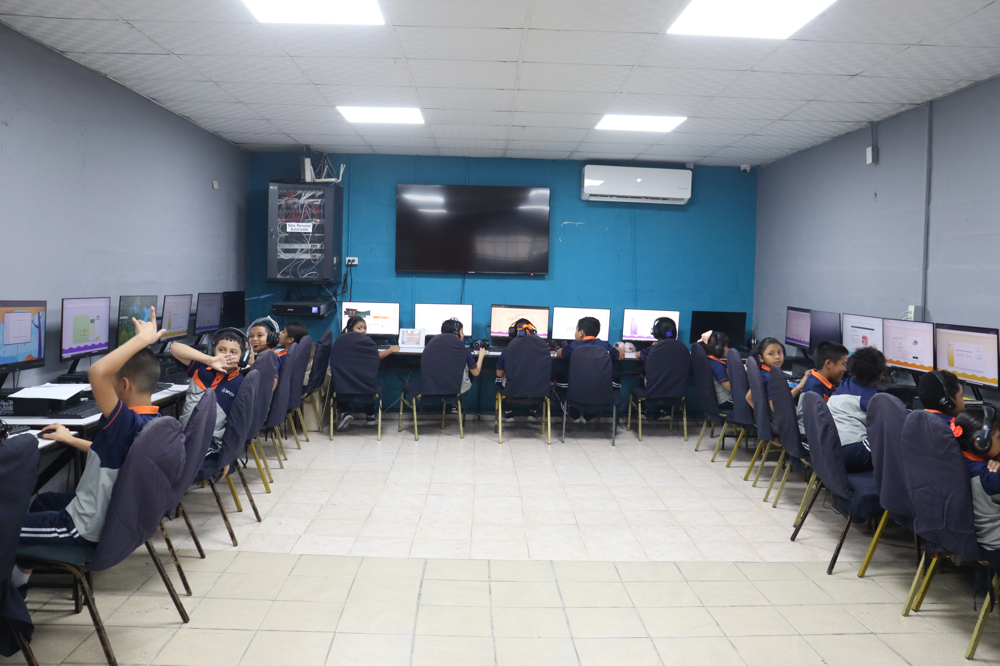
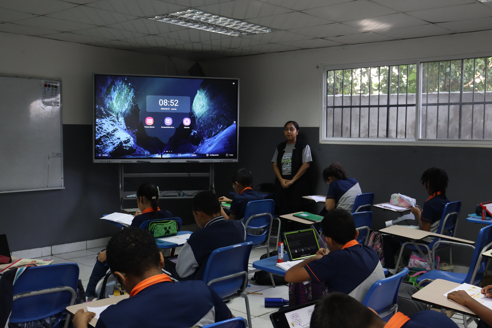
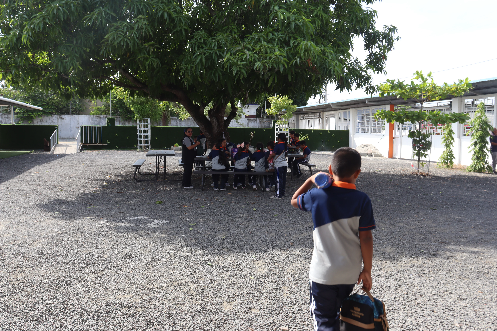
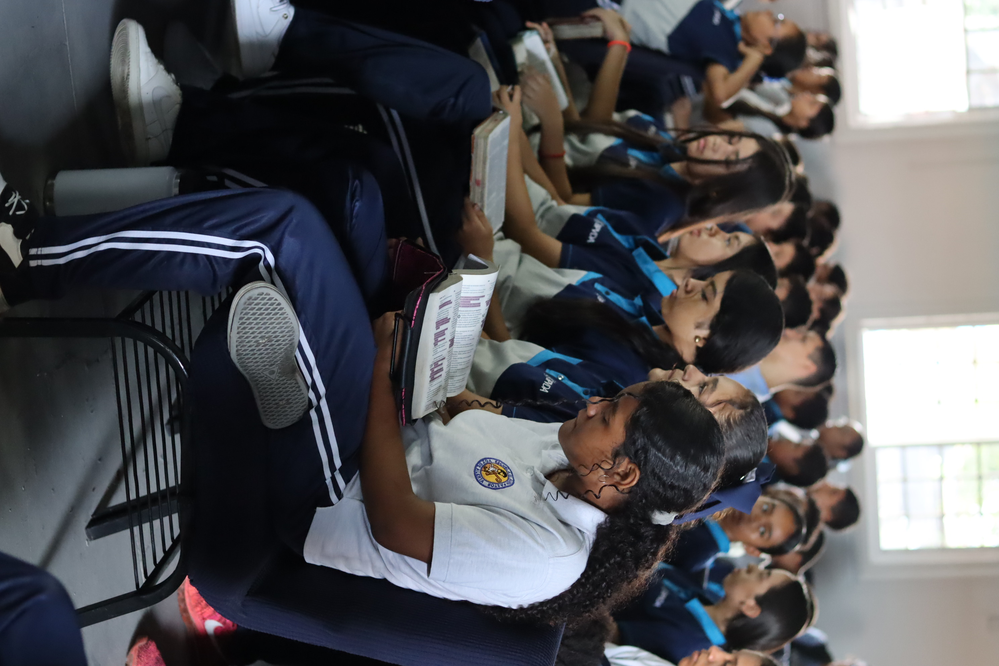

04 PRIMARIA
Aprender para comprender y transformar.
Una formación que fortalece hábitos, conocimiento, colaboración y propósito.
Descubre la etapa ↓PRIMARIA
Conocimiento que cobra sentido.
En primaria, cada experiencia invita a pensar, colaborar y desarrollar autonomía. Aquí se incorporará la descripción institucional de metodologías, áreas y proyectos.


Aprender juntos abre nuevas posibilidades.
Retos, lectura, creatividad y experiencias que conectan con la vida.
